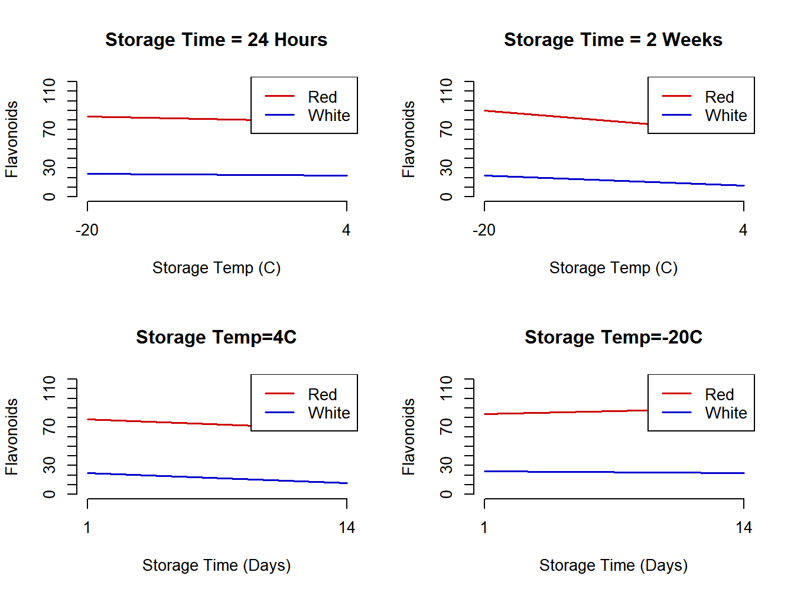
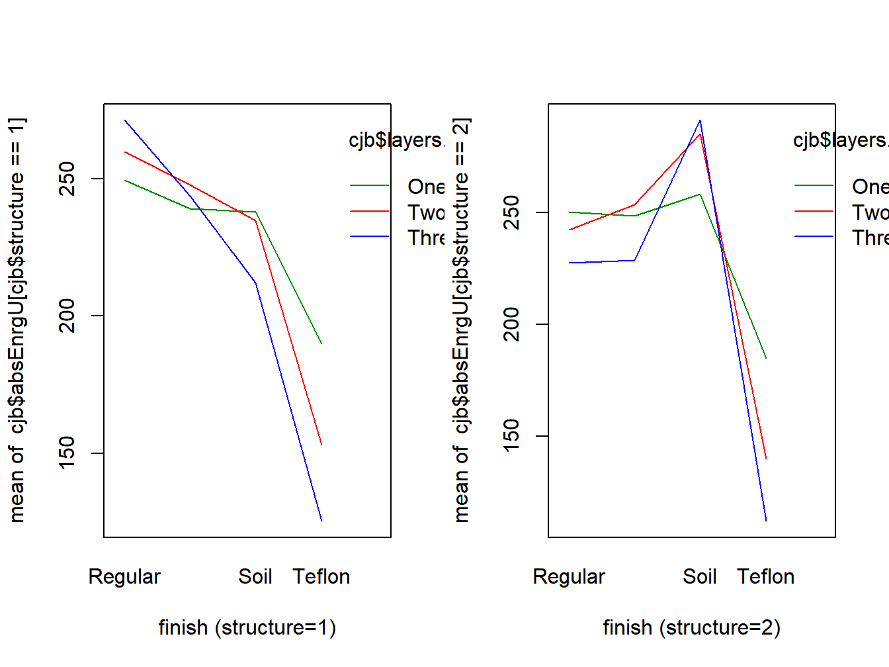

Chapter 9 Higher Order Models
Many experiments include three or more factors. Main effects and two-way interactions have the same interpretations as in two factor studies. A three-way interaction is when the patterns of the two-way interactions between two factors differ at different levels of the other factor(s).
In screening experiments, there can be any number of factors, typically with two or three levels each. The goal in these experiments is to determine which factors have the larger effects, then conduct new experiments focusing on these factors.
9.1 Three Factor Models - Mean Structure
In this section, we consider balanced three factor models, with labels A, B, and C, and with numbers of levels \(a\), \(b\), and \(c\), respectively. The number of replicates per treatment is \(n\), with an overall sample size of \(n_T=abcn\). The same adjustments can be made for unbalanced data as was described in the previous chapter.
The population mean when factor A is at level \(i\), B is at level \(j\), and C is at level \(k\) is \(\mu_{ijk}\). The marginal and overall means are given below.
\[ \mu_{ij\bullet}=\frac{\sum_{k=1}^c\mu_{ijk}}{c} \qquad \mu_{i\bullet k}=\frac{\sum_{j=1}^b\mu_{ijk}}{b} \qquad \mu_{\bullet jk}=\frac{\sum_{i=1}^a\mu_{ijk}}{a} \] \[ \mu_{i\bullet\bullet}=\frac{\sum_{j=1}^b\sum_{k=1}^c\mu_{ijk}}{bc} \qquad \mu_{\bullet j\bullet}=\frac{\sum_{i=1}^a\sum_{k=1}^c\mu_{ijk}}{ac} \qquad \mu_{\bullet\bullet k}=\frac{\sum_{i=1}^a\sum_{j=1}^b\mu_{ijk}}{ab} \] \[ \mu_{\bullet\bullet\bullet}=\frac{\sum_{i=1}^a\sum_{j=1}^b\sum_{k=1}^c\mu_{ijk}}{abc} \]
Main effects and interactions are defined below.
\[ \alpha_i = \mu_{i\bullet\bullet}-\mu_{\bullet\bullet\bullet} \qquad \beta_j = \mu_{\bullet j\bullet}-\mu_{\bullet\bullet\bullet} \qquad \gamma_k = \mu_{\bullet\bullet k}-\mu_{\bullet\bullet\bullet} \] \[ (\alpha\beta)_{ij}=\mu_{ij\bullet}-\mu_{i\bullet\bullet}- \mu_{\bullet j\bullet} + \mu_{\bullet\bullet\bullet} \qquad (\alpha\gamma)_{ik}=\mu_{i\bullet k}-\mu_{i\bullet\bullet}- \mu_{\bullet\bullet k} + \mu_{\bullet\bullet\bullet} \] \[ (\beta\gamma)_{jk}=\mu_{\bullet jk}-\mu_{\bullet j \bullet}- \mu_{\bullet\bullet k} + \mu_{\bullet\bullet\bullet} \] \[ (\alpha\beta\gamma)_{ijk}=\mu_{ijk}-\mu_{ij\bullet}-\mu_{i\bullet k}- \mu_{\bullet jk} + \mu_{i\bullet\bullet} + \mu_{\bullet j\bullet} + \mu_{\bullet\bullet k} - \mu_{\bullet\bullet\bullet} \]
The algorithm for obtaining the main effects and interaction effects goes as follows.
- Begin with the mean corresponding to the effect.
- Cover each subscript, one-at-a-time and multiply by \((-1)^1=-1\).
- Cover subscripts two-at-a-time and multiply by \((-1)^2=1\).
- Continue until all subscripts have been covered.
- Coefficients \(\pm 1\) will sum to 0.
The following constraints are obtained for the effects and their estimators.
\[ \sum_{i=1}^a\alpha_i=\sum_{j=1}^b\beta_j=\sum_{k=1}^c\gamma_k=0 \] \[ \sum_{i=1}^a(\alpha\beta)_{ij}=\sum_{j=1}^b(\alpha\beta)_{ij}= \sum_{i=1}^a(\alpha\gamma)_{ik}=\sum_{k=1}^c(\alpha\gamma)_{ij}= \sum_{j=1}^b(\beta\gamma)_{jk}=\sum_{k=1}^c(\beta\gamma)_{jk}=0 \] \[ \sum_{i=1}^a(\alpha\beta\gamma)_{ijk}= \sum_{j=1}^b(\alpha\beta\gamma)_{ijk}= \sum_{k=1}^c(\alpha\beta\gamma)_{ijk}=0 \]
Example 9.1 - Flavonoids in Wine
The following “population means” are based on observed experimental values to apply the formulas above and have been adjusted to have integer values for all effects (Genova et al. 2012). There were three factors, each at two levels, described below and the response was total flavonoids.
- Factor A - Grape Type Sangiovese (Red, \(i=1\)) and Muscat (White, \(i=2\))
- Factor B - Storage Temperature 4C \((j=1)\) and -20C \((j=2)\)
- Factor C - Storage Time 24 hours (1 day, \(k=1\)) and 2 weeks (14 days, \(k=2\))
The means are given below.
\[ \mbox{Sangiovese:} \quad \mu_{111}=78 \quad \mu_{112}=68 \quad \mu_{121}=84 \quad \mu_{122}=90 \] \[ \mbox{Muscat:} \quad \mu_{211}=22 \quad \mu_{212}=12 \quad \mu_{221}=24 \quad \mu_{222}=22 \] \[ \mu_{11\bullet}=\frac{78+68}{2}=73 \qquad \mu_{12\bullet}=\frac{84+90}{2}=87 \] \[ \mu_{1\bullet 1}=\frac{78+84}{2}=81 \qquad \mu_{1\bullet 2}=\frac{68+90}{2}=79 \] \[ \mu_{21\bullet}=\frac{22+12}{2}=17 \qquad \mu_{22\bullet}=\frac{24+22}{2}=23 \] \[ \mu_{2\bullet 1}=\frac{22+24}{2}=23 \qquad \mu_{2\bullet 2}=\frac{12+22}{2}=17 \] \[ \mu_{\bullet 11}=\frac{78+22}{2}=50 \qquad \mu_{\bullet 12}=\frac{68+12}{2}=40 \] \[ \mu_{\bullet 21}=\frac{84+24}{2}=54 \qquad \mu_{\bullet 22}=\frac{90+22}{2}=56 \] \[ \mu_{1\bullet\bullet}=\frac{78+68+84+90}{4}=80 \quad \mu_{2\bullet\bullet}=\frac{22+12+24+22}{4}=20 \] \[ \mu_{\bullet 1\bullet}=\frac{78+68+22+12}{4}=45 \quad \mu_{\bullet 2\bullet}=\frac{84+90+24+22}{4}=55 \] \[ \mu_{\bullet\bullet 1}=\frac{78+84+22+24}{4}=52 \quad \mu_{\bullet\bullet 2}=\frac{68+90+12+22}{4}=48 \] \[ \mu_{\bullet\bullet\bullet} = \frac{78+68+84+90+22+12+24+22}{8}=50 \] The main effects and interaction effects are obtained below.
\[ \mbox{Grape:} \quad \alpha_1=\mu_{1\bullet\bullet}- \mu_{\bullet\bullet\bullet} = 80-50=30 \qquad \alpha_2=20-50=-30 \] \[ \mbox{Temperature:} \quad \beta_1=\mu_{\bullet 1\bullet}- \mu_{\bullet\bullet\bullet} = 45-50=-5 \qquad \beta_2=55-50=5 \] \[ \mbox{Time:} \quad \gamma_1=\mu_{\bullet\bullet1}- \mu_{\bullet\bullet\bullet} = 52-50=2 \qquad \gamma_2=48-50=-2 \] \[ \mbox{Grape/Temp:} \quad (\alpha\beta)_{11}= \mu_{11\bullet}-\mu_{1\bullet\bullet}-\mu_{\bullet 1 \bullet} + \mu_{\bullet\bullet\bullet} = 73-80-45+50=-2 \] \[ (\alpha\beta)_{12}=2 \qquad (\alpha\beta)_{21}=2 \qquad (\alpha\beta)_{22}=-2 \] \[ \mbox{Grape/Time:} \quad (\alpha\gamma)_{11}= \mu_{1\bullet 1}-\mu_{1\bullet\bullet}-\mu_{\bullet\bullet 1} + \mu_{\bullet\bullet\bullet} = 81-80-52+50=-1 \] \[ (\alpha\gamma)_{12}=1 \qquad (\alpha\gamma)_{21}=1 \qquad (\alpha\gamma)_{22}=-1 \] \[ \mbox{Temp/Time:} \quad (\beta\gamma)_{11}= \mu_{\bullet 11}-\mu_{\bullet 1\bullet}-\mu_{\bullet\bullet 1} + \mu_{\bullet\bullet\bullet} = 50-45-52+50=3 \] \[ (\beta\gamma)_{12}=-3 \qquad (\beta\gamma)_{21}=-3 \qquad (\beta\gamma)_{22}=3 \] \[ (\alpha\beta_\gamma)_{111}=78-73-81-50+80+45+52-50=1 \] \[ (\alpha\beta_\gamma)_{112}=(\alpha\beta_\gamma)_{121}= (\alpha\beta_\gamma)_{211}=(\alpha\beta_\gamma)_{222}=-1 \quad (\alpha\beta_\gamma)_{122}=(\alpha\beta_\gamma)_{212}= (\alpha\beta_\gamma)_{221}=1 \] Interaction plots are given in Figure 9.1.

Figure 9.1: Interaction plots for flavonoid mean structure
The interactions are very small. By far the largest effects are red versus white grapes.
\[\nabla\]
9.2 Statistical Model and the Analysis of Variance
In this section, the model is defined, least squares estimators are given, as well as the sums of squares and \(F\)-tests.
The model for \(Y_{ijkl}\) is given below in terms of the parameters described in the previous section.
\[ Y_{ijkl} = \mu_{\bullet\bullet\bullet} + \alpha_i + \beta_j + \gamma_k + (\alpha\beta)_{ij} + (\alpha\gamma)_{ik} + (\beta\gamma)_{jk} + (\alpha\beta\gamma)_{ijk} + \epsilon_{ijkl} \] \[ \epsilon_{ijkl} \sim N\left(0,\sigma^2\right) \qquad i=1,\ldots,a; \quad j=1,\ldots,b; \quad k=1,\ldots,c; \quad l=1,\ldots,n \]
The parameters and their least squares estimators are given here.
\[ \mbox{Overall Mean:} \quad \mu_{\bullet\bullet\bullet} \qquad \qquad \hat{\mu}_{\bullet\bullet\bullet}= \overline{Y}_{\bullet\bullet\bullet\bullet} \]
\[ \mbox{Factor A Effects:} \quad \alpha_i \qquad \hat{\alpha}_i = \overline{Y}_{i\bullet\bullet\bullet} - \overline{Y}_{\bullet\bullet\bullet\bullet} \qquad i=1,\ldots,a \]
\[ \mbox{Factor B Effects:} \quad \beta_j \qquad \hat{\beta}_j = \overline{Y}_{\bullet j \bullet\bullet} - \overline{Y}_{\bullet\bullet\bullet\bullet} \qquad j=1,\ldots,b \]
\[ \mbox{Factor C Effects:} \quad \gamma_k \qquad \hat{\gamma}_k = \overline{Y}_{\bullet\bullet k \bullet} - \overline{Y}_{\bullet\bullet\bullet\bullet} \qquad k=1,\ldots,c \]
\[ \mbox{AB Interactions:} \quad (\alpha\beta)_{ij} \quad \hat{(\alpha\beta)}_{ij}= \overline{Y}_{ij\bullet\bullet} - \overline{Y}_{i\bullet\bullet\bullet} - \overline{Y}_{\bullet j \bullet\bullet} + \overline{Y}_{\bullet\bullet\bullet\bullet} \]
\[ \mbox{AC Interactions:} \quad (\alpha\gamma)_{ik} \quad \hat{(\alpha\gamma)}_{ik}= \overline{Y}_{i\bullet k\bullet} - \overline{Y}_{i\bullet\bullet\bullet} - \overline{Y}_{\bullet\bullet k\bullet} + \overline{Y}_{\bullet\bullet\bullet\bullet} \]
\[ \mbox{BC Interactions:} \quad (\beta\gamma)_{jk} \quad \hat{(\beta\gamma)}_{ij}= \overline{Y}_{\bullet jk\bullet} - \overline{Y}_{\bullet j\bullet\bullet} - \overline{Y}_{\bullet\bullet k\bullet} + \overline{Y}_{\bullet\bullet\bullet\bullet} \]
\[ \mbox{ABC Interactions:} \quad (\alpha\beta\gamma)_{ijk} \] \[ \hat{(\alpha\beta\gamma)}_{ijk}= \overline{Y}_{ijk\bullet} - \overline{Y}_{ij\bullet \bullet} - \overline{Y}_{i\bullet k\bullet} - \overline{Y}_{\bullet jk\bullet} + \overline{Y}_{i\bullet\bullet\bullet} + \overline{Y}_{\bullet j\bullet\bullet} + \overline{Y}_{\bullet\bullet k\bullet} - \overline{Y}_{\bullet\bullet\bullet\bullet} \]
The predicted values simplify to the following values when the estimated overall mean and corresponding main effects and interactions are added together.
\[ \hat{Y}_{ijkl} = \hat{\mu}_{\bullet\bullet\bullet} + \hat{\alpha}_i + \hat{\beta}_j + \hat{\gamma}_k +\hat{(\alpha\beta)}_{ij}+\hat{(\alpha\gamma)}_{ik}+ \hat{(\beta\gamma)}_{jk} + \hat{(\alpha\beta\gamma)}_{ijk}= \overline{Y}_{ijk\bullet} \] The residuals are \(e_{ijkl}=Y_{ijkl}-\overline{Y}_{ijk\bullet}\).
The sums of squares, degrees of freedom and expected mean squares are given below. To save space they will be given in terms of effects estimates.
\[ \mbox{Total:} \quad SSTO= \sum_{i=1}^a\sum_{j=1}^b\sum_{k=1}^c\sum_{l=1}^n \left(Y_{ijkl}-\overline{Y}_{\bullet\bullet\bullet\bullet}\right)^2 \qquad df_{TO}=abcn-1 \] \[ \mbox{A:} \quad SSA=bcn\sum_{i=1}^a \hat{\alpha}_i^2 \qquad df_A=a-1 \qquad E\{MSA\}=\sigma^2 + \frac{bcn\sum_{i=1}^a\alpha_i^2}{a-1} \] \[ \mbox{B:} \quad SSB=acn\sum_{j=1}^b \hat{\beta}_j^2 \qquad df_B=b-1 \qquad E\{MSB\}=\sigma^2 + \frac{acn\sum_{j=1}^b\beta_j^2}{b-1} \] \[ \mbox{C:} \quad SSC=abn\sum_{k=1}^c \hat{\gamma}_k^2 \qquad df_C=c-1 \qquad E\{MSC\}=\sigma^2 + \frac{abn\sum_{k=1}^c\gamma_k^2}{c-1} \] \[ \mbox{AB:} \quad SSAB=cn\sum_{i=1}^a\sum_{j=1}^b \hat{(\alpha\beta)}_{ij}^2 \qquad df_{AB}=(a-1)(b-1) \] \[ E\{MSAB\}=\sigma^2 + \frac{cn\sum_{i=1}^a\sum_{j=1}^b(\alpha\beta)_{ij}^2}{(a-1)(b-1)} \] \[ \mbox{AC:} \quad SSAC=bn\sum_{i=1}^a\sum_{k=1}^c \hat{(\alpha\gamma)}_{ik}^2 \qquad df_{AC}=(a-1)(c-1) \] \[ E\{MSAC\}=\sigma^2 + \frac{bn\sum_{i=1}^a\sum_{k=1}^c(\alpha\gamma)_{ik}^2}{(a-1)(c-1)} \] \[ \mbox{BC:} \quad SSBC=an\sum_{j=1}^b\sum_{k=1}^c \hat{(\beta\gamma)}_{jk}^2 \qquad df_{BC}=(b-1)(c-1) \] \[ E\{MSBC\}=\sigma^2 + \frac{an\sum_{j=1}^b\sum_{k=1}^c(\beta\gamma)_{jk}^2}{(b-1)(c-1)} \] \[ \mbox{ABC:} \quad SSABC=n\sum_{i=1}^a\sum_{j=1}^b\sum_{k=1}^c \hat{(\alpha\beta\gamma)}_{ijk}^2 \qquad df_{ABC}=(a-1)(b-1)(c-1) \] \[ E\{MSABC\}=\sigma^2 + \frac{n\sum_{i=1}^a\sum_{j=1}^b\sum_{k=1}^c (\alpha\beta\gamma)_{ijk}^2}{(a-1)(b-1)(c-1)} \]
\[ \mbox{Error:} \quad SSE = \sum_{i=1}^a\sum_{j=1}^b\sum_{k=1}^c\sum_{l=1}^n \left(Y_{ijkl}-\overline{Y}_{ijk\bullet}\right)^2 \quad df_{E}=abc(n-1) \quad E\{MSE\}=\sigma^2 \]
To test for main effects and interactions, the following \(F\)-tests are obtained (where TS is test statistic and RR is rejection region).
\[ H_0^{ABC}: (\alpha\beta\gamma)_{ijk}=0 \qquad i=1,\ldots,a; \quad j=1,\ldots,b; \quad k=1,\ldots,c \] \[ TS:F_{ABC}^*=\frac{MSABC}{MSE} \qquad RR:F_{ABC}^* \ge F_{1-\alpha;(a-1)(b-1)(c-1),abc(n-1)} \]
\[ H_0^{AB}: (\alpha\beta)_{ij}=0 \qquad i=1,\ldots,a; \quad j=1,\ldots,b; \] \[ TS:F_{AB}^*=\frac{MSAB}{MSE} \qquad RR:F_{AB}^* \ge F_{1-\alpha;(a-1)(b-1),abc(n-1)} \]
\[ H_0^{AC}: (\alpha\gamma)_{ik}=0 \qquad i=1,\ldots,a; \quad \quad k=1,\ldots,c \] \[ TS:F_{AC}^*=\frac{MSAC}{MSE} \qquad RR:F_{AC}^* \ge F_{1-\alpha;(a-1)(c-1),abc(n-1)} \]
\[ H_0^{BC}: (\beta\gamma)_{jk}=0 \qquad j=1,\ldots,b; \quad k=1,\ldots,c \] \[ TS:F_{BC}^*=\frac{MSBC}{MSE} \qquad RR:F_{BC}^* \ge F_{1-\alpha;(b-1)(c-1),abc(n-1)} \]
\[ H_0^{A}: \alpha_i=0 \qquad i=1,\ldots,a \] \[ TS:F_{A}^*=\frac{MSA}{MSE} \qquad RR:F_{A}^* \ge F_{1-\alpha;a-1,abc(n-1)} \]
\[ H_0^{B}: \beta_j=0 \qquad j=1,\ldots,b \] \[ TS:F_{B}^*=\frac{MSB}{MSE} \qquad RR:F_{B}^* \ge F_{1-\alpha;b-1,abc(n-1)} \]
\[ H_0^{C}: \gamma_k=0 \qquad k=1,\ldots,c \] \[ TS:F_{C}^*=\frac{MSC}{MSE} \qquad RR:F_{C}^* \ge F_{1-\alpha;c-1,abc(n-1)} \]
Example 9.2 - Finishing Treatments for Chef Jackets
A study was conducted to observe the effects of three factors for protecting chef jackets from scald injuries (Deverajan, McQueen, and Wen 2017). Three responses were measured: absorbed energy (kj/m^2) at 3 sensors (upper, middle, and lower). This example will analyze the upper sensor measurements. The three factors are as follow, there were \(n=5\) replicates per treatment combination.
- Factor A \((a=4)\) - Finish: Regular \((i=1)\), Water \((i=2)\), Soil \((i=3)\), Teflon \((i=4)\)
- Factor B \((b=2)\) - Structure: Plain \((j=1)\), Twill \((j=2)\)
- Factor C \((c=3)\) - Number of Layers: 1 \((k=1)\), 2 \((k=2)\), 3 \((k=3)\)
The R code and output are given below and the interaction plot is given in Figure 9.2.
## finish structure layers trt absEnrgU absEnrgM absEnrgL
## 1 1 1 1 1 239.846 202.176 204.611
## 2 1 1 1 1 267.275 205.320 231.043## finish structure layers trt absEnrgU absEnrgM absEnrgL
## 119 4 2 3 24 107.863 90.537 80.929
## 120 4 2 3 24 117.774 109.554 104.529
Figure 9.2: Interaction plots for chef jacket study
##
## Call:
## aov(formula = absEnrgU ~ finish.f * structure.f * layers.f, data = cjb)
##
## Residuals:
## Min 1Q Median 3Q Max
## -59.117 -7.176 -0.843 7.294 84.653
##
## Coefficients:
## Estimate Std. Error t value Pr(>|t|)
## (Intercept) 224.4625 1.5753 142.486 < 2e-16 ***
## finish.f1 25.7041 2.7285 9.420 2.62e-15 ***
## finish.f2 19.0374 2.7285 6.977 3.87e-10 ***
## finish.f3 28.8043 2.7285 10.557 < 2e-16 ***
## structure.f1 -2.3958 1.5753 -1.521 0.131593
## layers.f1 7.8250 2.2278 3.512 0.000679 ***
## layers.f2 2.6250 2.2278 1.178 0.241607
## finish.f1:structure.f1 12.4625 2.7285 4.567 1.47e-05 ***
## finish.f2:structure.f1 2.3958 2.7285 0.878 0.382105
## finish.f3:structure.f1 -22.5709 2.7285 -8.272 7.52e-13 ***
## finish.f1:layers.f1 -8.0917 3.8587 -2.097 0.038624 *
## finish.f2:layers.f1 -7.6250 3.8587 -1.976 0.051021 .
## finish.f3:layers.f1 -13.0416 3.8587 -3.380 0.001050 **
## finish.f1:layers.f2 -1.6415 3.8587 -0.425 0.671491
## finish.f2:layers.f2 4.5249 3.8587 1.173 0.243841
## finish.f3:layers.f2 4.0582 3.8587 1.052 0.295579
## structure.f1:layers.f1 -0.7666 2.2278 -0.344 0.731527
## structure.f1:layers.f2 -0.7667 2.2278 -0.344 0.731477
## finish.f1:structure.f1:layers.f1 -9.7000 3.8587 -2.514 0.013609 *
## finish.f2:structure.f1:layers.f1 -3.9333 3.8587 -1.019 0.310607
## finish.f3:structure.f1:layers.f1 15.5833 3.8587 4.038 0.000108 ***
## finish.f1:structure.f1:layers.f2 -0.5500 3.8587 -0.143 0.886966
## finish.f2:structure.f1:layers.f2 -2.0833 3.8587 -0.540 0.590524
## finish.f3:structure.f1:layers.f2 0.5833 3.8587 0.151 0.880169
## ---
## Signif. codes: 0 '***' 0.001 '**' 0.01 '*' 0.05 '.' 0.1 ' ' 1
##
## Residual standard error: 17.26 on 96 degrees of freedom
## Multiple R-squared: 0.9055, Adjusted R-squared: 0.8829
## F-statistic: 40.01 on 23 and 96 DF, p-value: < 2.2e-16## Analysis of Variance Table
##
## Response: absEnrgU
## Df Sum Sq Mean Sq F value Pr(>F)
## finish.f 3 217854 72618 243.8496 < 2.2e-16 ***
## structure.f 1 689 689 2.3129 0.1315926
## layers.f 2 7093 3546 11.9090 2.399e-05 ***
## finish.f:structure.f 3 21899 7300 24.5126 7.328e-12 ***
## finish.f:layers.f 6 18696 3116 10.4634 6.608e-09 ***
## structure.f:layers.f 2 141 71 0.2368 0.7895699
## finish.f:structure.f:layers.f 6 7680 1280 4.2983 0.0007001 ***
## Residuals 96 28589 298
## ---
## Signif. codes: 0 '***' 0.001 '**' 0.01 '*' 0.05 '.' 0.1 ' ' 1## [1] "diff" "lwr" "upr" "p.adj"## [1] 137With the exception of the Structure main effects and Structure/Layers interaction effects, all terms are significant. Since the 3-way interaction is significant, Structure and Structure/Layers should be kept in the model. For any pair of treatment means, Tukey’s HSD is computed as follows (there are 4(2)(3)=24 means).
\[ MSE = 298 \quad df_E=24(5-1)=96 \qquad HSD = q_{.95;24,96}\sqrt{\frac{298}{5}}=5.297(7.720)=40.893 \]
There are 137 (out of 24(23)/2=276) pairs of treatments that differ by more than 40.893.